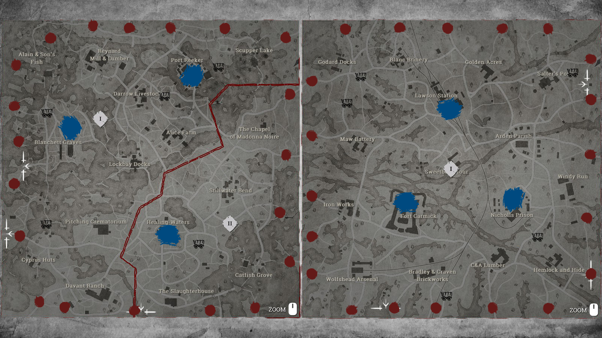
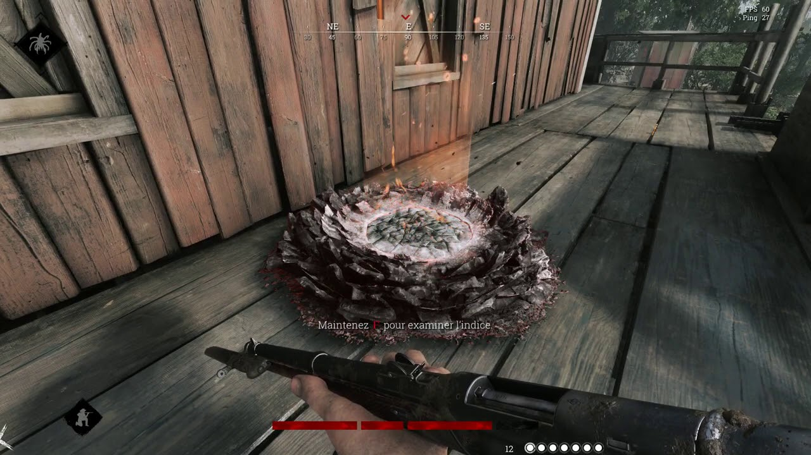
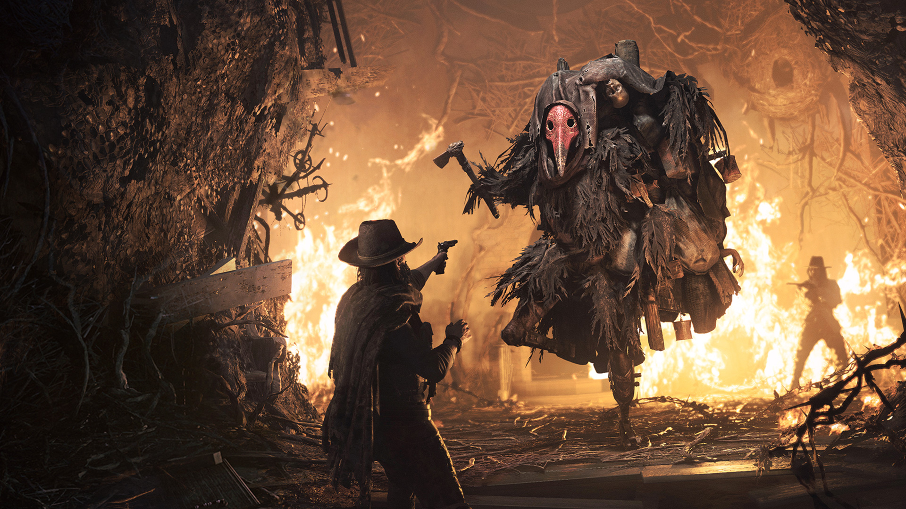
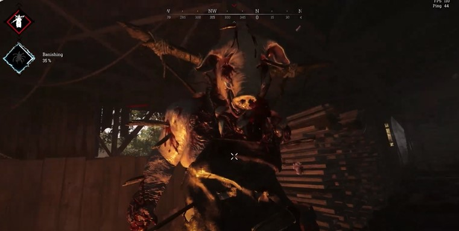
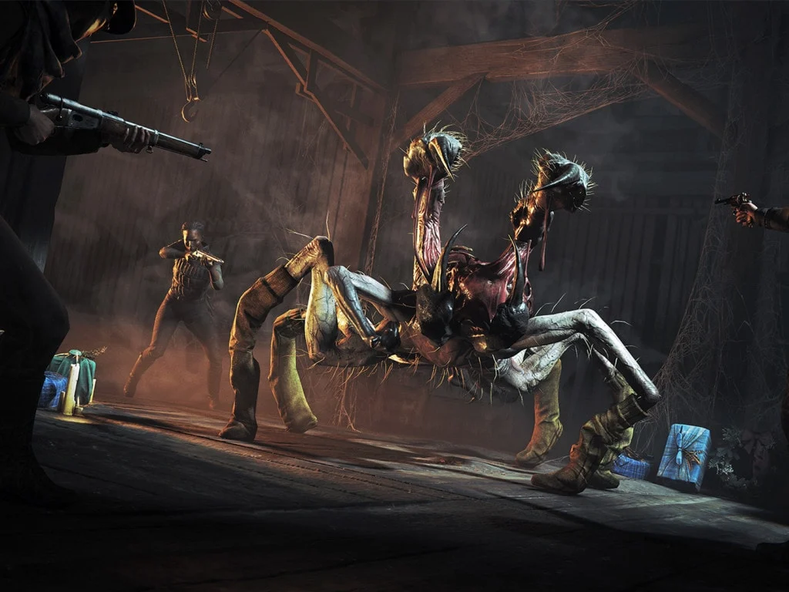
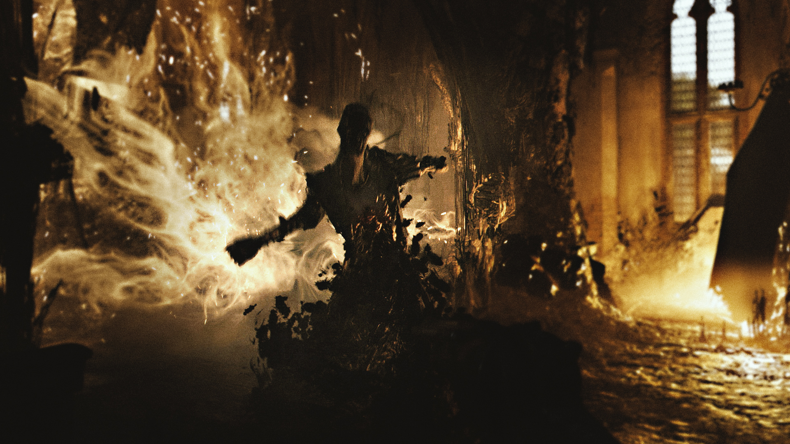
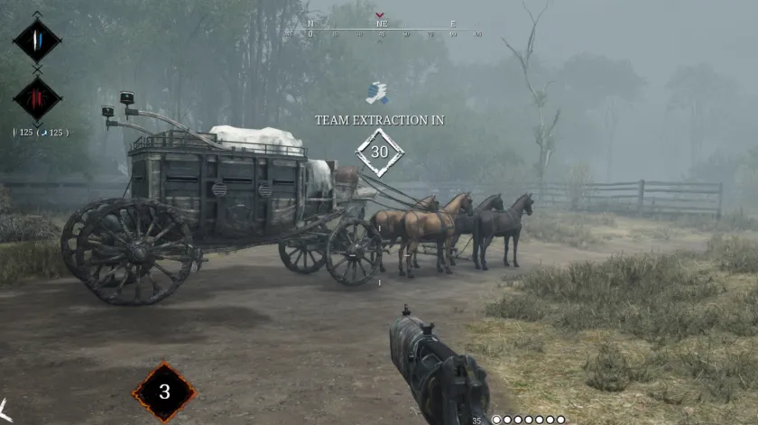

Bienvenue sur le premier site de mon portfolio !
Ce site va permettre de présenter plusieurs informations sur Hunt Showdown, des captures d'écrans et les dernières actualités sur le jeu
Hunt Showdown est un jeu d'extraction à la première personne.
Le but est de récupérer des indices jusqu'à la découverte de l'emplacement d'un boss, tuer ce dernier, puis extraire sa prime.
Au commencement d'une partie, plusieurs équipes apparaissent sur la même carte, et doivent donc récupérer la même prime, le PVP est donc très développé.
La partie se déroule en plusieurs étapes
Chaque équipe de chasseurs apparaît à des points prédéfinis en bord de carte


Les chasseurs doivent scanner les indices, qui vont leur permettre de réduire la zone de recherche du boss. Au bout de 3 indices, la position du boss est révélée
Une fois la position du boss découverte, il est possible d'engager le combat contre un des 5 boss existants.
Chacun a ses spécificités, résistances et faiblesses.
Lorsque le boss est tué, il est ensuite nécessaire d'effectuer un bannissement, qui permettra de soigner complètement votre chasseur.
   
Après avoir effectué le bannissement, deux primes (une seule pour le crocodile) sont récupérables qu'il faudra ensuite amener à un des points d'extraction.
Cette prime vous rend visible sur la carte, et attirera à coup sûr les autres chasseurs, qui n'ont d'autre choix que de vous tuer pour les récupérer.
